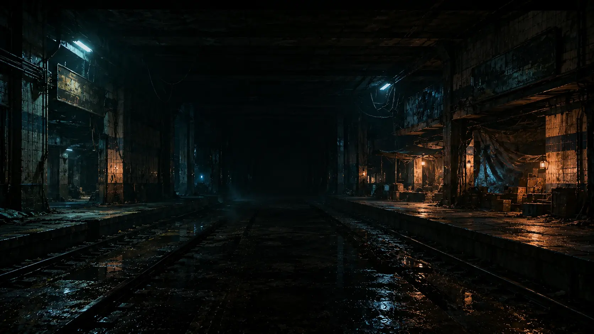
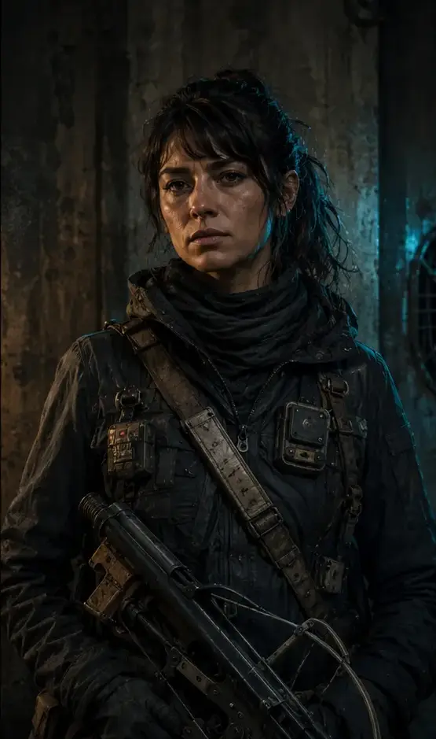

Preparación
Día 1 · La señal
Día 1 · La señal
Base de salida y regreso: Los Héroes · Línea 1. Sigue la señal y conserva recursos para volver; leer no adelanta la hora narrativa.
Contacto hostil
El ruido rompe el silencio.
Turno de SaraUn juego basado en la obra digital de Diego Bastías

Experiencia narrativa de supervivencia
La ciudad de los Rotos. Tres expedicionarios abandonan la seguridad de la antigua Línea 1 para seguir una señal que la Red UNO —el sistema de vigilancia y control de la Gobernanza Mundial— quiso borrar.
Versión 0.2 · Demo narrativa · Tres días · Guardado automático
Versión 0.2 · Prototipo narrativo · 3 días
Un grupo de Rotos sale del refugio de la antigua Línea 1 tras detectar una señal dentro de la Red UNO. Tienen tres días para descubrir quién la envió, sobrevivir a sus guardianes y decidir qué hacer con la verdad.
Controles narrativos: mouse o teclas 1, 2 y 3. En combate, selecciona un enemigo y una acción. Guardado automático fuera de los enfrentamientos.

Prólogo · Los Héroes
Cómo jugar · Guía de expedición
Conocer más la historia
Empieza por la vida del refugio y el motivo de la expedición. Las otras secciones amplían el mundo de La ciudad de los rotos; puedes volver al juego en cualquier momento.
Universo de ficción · Diego Bastías Alfaro · 2023No necesitas conocer todas las fechas ni todas las facciones para empezar. Estas son las necesidades que ponen en marcha la expedición.
Los Héroes es el refugio desde el que parten Sara, Elías y Noa. Allí se guarda comida, se arregla lo que todavía sirve y se atiende a quienes regresan heridos. Mara prepara suministros; el Armero mantiene las armas. Cada expedición necesita una parte de las reservas que también usan los demás.
En los túneles del libro, recibir a los cazadores significa volver a comer juntos y saber quién sobrevivió al viaje. Esa espera está detrás de la preparación del grupo: salir tiene sentido porque hay personas que necesitan que vuelvan.
Una voz atravesó una frecuencia de la Red UNO. Dijo «todavía estamos aquí», sin dejar un nombre. La expedición dispone de tres días para investigar. No sabe todavía quién habla, desde dónde ni por qué utiliza la red de quienes vigilan la ciudad.
Ignorarla puede dejar a alguien sin ayuda. Responder sin cuidado puede revelar a quienes viven ocultos. Ese es el problema con el que empieza la campaña; sus respuestas se descubren jugando.
Sara se ocupa de las heridas y de las personas que encuentran. Pedirle que conserve medicina puede significar pedirle que deje a alguien sin atender.
Elías entiende los equipos y busca información. Un dispositivo puede servirle para abrir una puerta y, al mismo tiempo, conectar al grupo con una red que lo rastrea.
Noa conoce las rutas y se ocupa de que puedan regresar. Un desvío para ayudar a otro grupo también cambia las condiciones de la vuelta.
Las decisiones son de la expedición. Sus integrantes tienen motivos distintos para apoyarlas o discutirlas.
Rocío, Tomás y Bruno transportan suministros y ayudan a conectar comunidades. Puedes elegir sus encargos desde el menú de actividades y volver a la campaña después. Ambos equipos conservan sus recursos y su avance; un encargo no adelanta los días de la expedición. Si los Mensajeros entregan el informe de Morales en Los Héroes, Noa podrá revisarlo al preparar una salida de la campaña.
«La vida en los túneles» explica las costumbres y las necesidades de los Rotos. «El control de la ciudad» presenta la Gobernanza y la Red UNO. «Cómo llegamos aquí» reúne la cronología de la novela.
Las secciones del libro, especialmente las facciones y los fragmentos originales, revelan secretos que los personajes aún pueden desconocer. Son lecturas opcionales. La señal, esta expedición y sus protagonistas pertenecen a la adaptación jugable.
Leer La ciudad de los rotos, de Diego Bastías Alfaro (abre otra pestaña)
La novela imagina una ciudad dividida por la vigilancia, la memoria y la forma en que cada grupo decidió sobrevivir.
Una capital parcialmente habitable, cubierta por naturaleza, vitrinas vacías, semáforos todavía activos, drones automáticos y máquinas que continúan dando órdenes a una población que ya no existe.
Las antiguas estaciones de Línea 1 sostienen comunidades de Rotos. Allí la vida es analógica, la electricidad escasa y el alimento obliga a recorrer kilómetros o subir a cazar.
La Gobernanza Unida conserva un territorio cercado y vigilado; lejos de allí, El Valle mantiene una élite longeva bajo un domo que proyecta el Santiago perdido.
La obra sitúa el origen del mundo en una cadena de plebiscitos, intervenciones y protocolos de Gobernanza Mundial. En esta línea temporal ficticia, Chile pierde progresivamente su soberanía, la vida digital se convierte en un instrumento de control y la resistencia termina rechazando teléfonos, dinero digital y sistemas de localización.
La población que no acepta ese orden se separa de la superficie. Algunos forman comunidades bajo el Metro; otros quedan sin identificación; un grupo consigue tecnología en El Valle y, tras un conflicto interno, es desterrado. Un siglo después, cada comunidad recuerda una versión distinta de esa ruptura.
El relato utiliza el 18 de octubre como antecedente del proyecto global que más tarde dividiría al país.
En la ficción, Naciones Unidas destituye al presidente en junio de 2024; las elecciones de 2025 son postergadas y se convoca un plebiscito sobre la nueva agenda.
La Gobernanza Unida ocupa el antiguo Palacio de La Moneda y consolida un perímetro fortificado en el centro de Santiago.
Tras el asesinato de la senadora Emilia Schfeiser, grupos de resistencia penetran dos veces el perímetro de la ex calle Bandera.
El deterioro y los atentados atribuidos a la TAM obligan a suspender el Metro. Sus estaciones se transformarán en refugio.
Se aceptan protocolos de Gobernanza Mundial. La resistencia destruye o abandona dispositivos y el país entra en una rebelión prolongada.
Cazadores de los túneles roban tecnología y documentos. El desacuerdo sobre implantes divide a la comunidad y origina el destierro de quienes serán llamados merodeadores.
Los túneles siguen habitados; la Red UNO vigila el territorio controlado y los merodeadores sobreviven arriba. La expedición que sigue una señal es el punto de partida de la adaptación jugable, no un episodio de esta cronología del libro.
“Santiago ya no suena como antes. No hay motores, ni voces, ni pasos apurados cruzando las calles. Solo el crujir de ramas que nacen entre el concreto y el viento que se cuela entre edificios vacíos. Bajo la ciudad, donde antes pasaban trenes llenos de gente, aún hay vida.”Prólogo · Neo Santiago 2130: La ciudad de los rotos
Los túneles no son un escondite temporal: son una sociedad que lleva generaciones aprendiendo a sobrevivir sin ser localizada.
Los Rotos se alejaron de todo lo que podía vincularlos al sistema de control mundial. Detuvieron su vida digital y convirtieron la antigua Línea 1 en una extensa ciudad subterránea. La pertenencia original tenía una regla: ser hijo de padre y madre chilenos o haber nacido en Chile antes del gran apagón.
Cuatro accesos principales conectan el refugio con la superficie. Pequeños túneles anexos permiten salir a explorar, pero cada puerta representa el riesgo de revelar la posición de la comunidad.
“Bajo tierra no está permitida la tecnología que pueda vincular la posición o datos vitales de un ciudadano. Aquí no existen celulares, ni radios satelitales, ni GPS. Menos computadoras rastreables por el Gobierno Mundial.”Capítulo II · Bajo tierra
La memoria se conserva mediante relatos, papeles, libros viejos y archivos que nadie puede reproducir todavía. Los ancianos cuentan el antiguo Chile alrededor de fogatas encendidas en barriles; los niños heredan una ciudad que solo conocen por la voz de otros.
La electricidad alcanza apenas para algunas luces. La mayoría camina entre túneles iluminados por antorchas y recorre kilómetros para intercambiar víveres, ropa, libros o herramientas. El alimento es escaso; verduras como lechugas, papas, zapallos y pepinos crecen en campos hidropónicos, mientras la carne depende de expediciones que pueden durar meses.
Cuando los cazadores regresan, toda la comunidad participa. La comida se comparte, se preserva carne como charqui y sobreviven preparaciones antiguas como la once, el merkén y el ñachi. No son adornos folclóricos: son una forma de demostrar que todavía existe una continuidad cultural.
Los ancianos esconden la existencia de los merodeadores para que el miedo no paralice a los jóvenes que deben cazar. Esa decisión protege la subsistencia inmediata, pero transforma el conocimiento en poder y prepara el conflicto moral central de la demo: ¿cuánta verdad puede soportar un refugio?
“El miedo que traería el difundir que afuera hay otros podría incluso destruirnos… Ellos disfrutan de estos pequeños momentos; viviendo aquí es poco y nada lo que podemos hacer y las alegrías son momentos escasos.”Capítulo VIII · El secreto de los sabios
La Red UNO no es solamente una organización enemiga: es la infraestructura que decide quién puede existir dentro del territorio controlado.
En la ficción, Naciones Unidas ocupa el antiguo Palacio de La Moneda y establece una colonia protegida en el centro de Santiago. Sus residentes aceptan las normas internacionales, el abastecimiento gubernamental y una vigilancia permanente a cambio de seguridad. Fuera de sus muros quedan los no identificados, los vagabundos, las ruinas y quienes rechazaron el plan global.
Eliminar dinero físico y trasladar a la población a un sistema de puntaje.
Reemplazar conversaciones privadas por una red centralizada.
Eliminar textos que pudieran alentar subversión, especialmente filosofía, música y arte.
Restringir todo intercambio fuera del sistema establecido.
Limitar internet y cualquier forma de recopilar o descargar archivos.
El capítulo III atribuye a SONAR el monitoreo de salud, ubicación y pensamientos mediante metales y nanobots. El juego lo adapta como rastreo de señales físicas; esa es la regla que utiliza la expedición.
“La Red UNO era una forma de controlar y abastecer a todos los ciudadanos del sector controlado por este organismo. La Red UNO permitía saber dónde se encontraba cada ciudadano con cada latido que su corazón emitía, volviéndolos así una especie de sonar o GPS que controla todas las pequeñas formas de disidencia.”Capítulo I · La olvidada ciudad de Santiago
La Red UNO funciona a la vez como identificación, red de beneficios y mecanismo de obediencia. Quien no posee una identidad reconocida no puede acercarse al perímetro. Quien está afiliado no puede ocultar su posición ni oponerse sin ser detectado.
La barra de amenaza representa cuánto ha aprendido la red sobre la expedición. Disparos, transmisiones, rutas expuestas y decisiones arriesgadas elevan ese valor. La oscuridad, el silencio, los accesos analógicos y algunos archivos pueden reducirlo o abrir alternativas.
Los drones son extensiones mecánicas de la vigilancia y pueden ser dañados o aturdidos mediante EMP. Los agentes son humanos protegidos por equipo de la Red UNO: el pulso electromagnético no los neutraliza y requieren cobertura, daño concentrado o ataques que atraviesen su defensa.
Cada ficha distingue el origen narrativo de su traducción al combate y la exploración de la demo.

Los últimos chilenos nacidos en Chile y sus descendientes. No reciben el nombre por estar vencidos, sino por lo que queda de ellos después de perder país, superficie y vida digital.
Comunidades conectadas por las estaciones y túneles de la antigua Línea 1.
Cohesión, conocimiento del subsuelo, tradición oral y tecnología artesanal recuperada.
Escasez de alimento y energía, aislamiento, esterilidad y secretos que dividen a la comunidad.
No son una amenaza enemiga: son aquello que intentas conservar. La moral mide su cohesión. Si llega a cero, la expedición debe volver al refugio. Ayudar a otros puede costar recursos, pero protege las rutas y los finales más favorables.

Jóvenes que abandonan la seguridad de los túneles para buscar animales y devolver carne a una población que sobrevive principalmente de cultivos.
Avanzar ligero, leer rastros, conservar energía y regresar antes de convertirse en presa.
Orientación, resistencia, armas silenciosas, adaptación y conocimiento heredado.
Pocas provisiones, viajes prolongados y un conocimiento incompleto de las amenazas reales.
Noa representa esta tradición. Su disparo preciso aumenta la posibilidad de superar defensas altas, pero cada bala es escasa. Su taller permite fabricar granadas y cargas EMP con materiales recuperados.

Un sistema de afiliación, abastecimiento y rastreo que reconoce a cada ciudadano controlado mediante su identidad y cada latido del corazón.
El perímetro de la Gobernanza Unida y la infraestructura todavía conectada a su red.
Vigilancia persistente, reconocimiento, automatización y control centralizado de recursos.
Depende de energía, señal, sensores y dispositivos que pueden quedar aislados.
Reserva las cargas EMP para drones: causan 22 de daño y los aturden. La habilidad técnica de Elías también puede descargar una batería contra objetivos mecánicos. El disparo y las granadas resuelven el peligro, pero elevan el costo material o la amenaza.

La novela presenta a los temidos cascos morados, antes cascos azules, como la seguridad que impide acercarse a quienes no poseen identificación de la Red UNO. La demo amplía esa fuerza en unidades de contención, tiradores, rastreadores SONAR y comandantes.
Más HP, defensa y blindaje que un merodeador; los comandantes son los enemigos humanos más resistentes.
Contención, precisión, rastreo SONAR y mando de perímetro con casco morado.
Siguen siendo humanos: el EMP no funciona, pero el fuego concentrado, los críticos y las granadas sí.
Usa Defender antes de una ronda peligrosa, concentra ataques en un objetivo y no desperdicies EMP. Elías puede buscar un punto débil; Noa mejora la precisión; una granada daña a toda la formación, aunque aumenta la amenaza.

No son robots ni una especie distinta. Son personas de carne y hueso reconstruidas con circuitos, implantes y tecnología recuperada; antiguos miembros de los túneles que eligieron otro camino.
Un grupo que robó tecnología de El Valle, quiso implantarla en los Rotos y fue desterrado tras el conflicto con los ancianos.
Sobreviven en la superficie, rastrean pasos y respiración, reconstruyen cuerpos y conservan núcleos de sus muertos.
No poseen el blindaje uniforme de la Red UNO; su comunidad depende de piezas recuperadas y protege a sus caídos.
Elimina primero acechadores y rastreadoras para reducir ataques precisos. Sus golpes pueden provocar sangrado: lleva vendas. El EMP no los afecta porque no son unidades mecánicas. Los reconstruidos y guardianes soportan más daño; conserva munición para ellos.

Una ciudad hipermoderna y brutalista de aproximadamente 2,5 millones de habitantes conectados por implantes, protegidos del dolor y del envejecimiento bajo un domo que proyecta un Santiago desaparecido.
Fue construida por exempresarios y familias poderosas que podían costear una vida separada.
Longevidad, medicina avanzada, seguridad casi pensante, energía y archivos tecnológicos.
Su bienestar depende de implantes, servidores, muros y una ilusión tecnológica aislada del resto de Santiago.
El Valle no es una facción de combate directo. Es el origen de tecnología, documentos y preguntas que explican el nacimiento de los merodeadores. Comprenderlo puede cambiar cómo interpretas a los enemigos y qué verdad decides entregar al final.
Pasajes reales de la obra que acompaña esta experiencia. Se normalizaron únicamente saltos de línea y puntuación menor para su lectura en pantalla.
Estos fragmentos no reemplazan el libro. Funcionan como puerta de entrada a su voz, su historia y sus contradicciones. La información táctica del juego no forma parte de ellos.
“Santiago ya no suena como antes. No hay motores, ni voces, ni pasos apurados cruzando las calles. Solo el crujir de ramas que nacen entre el concreto y el viento que se cuela entre edificios vacíos. Bajo la ciudad, donde antes pasaban trenes llenos de gente, aún hay vida. Los llaman ‘Rotos’. No por lo que son, sino por lo que queda de ellos.”
“El Valle era una ciudad hipermoderna, con aspecto brutalista, donde habitan aproximadamente 2,5 millones de personas conectadas bajo un implante subcutáneo en la zona frontal de la cabeza. Estos humanos, despojados de todo dolor y de toda angustia, vivían en un estado casi de omnipresencia. Gente con vestiduras simples, cortes rectos, que encajaban perfectamente con la seriedad de cada uno de ellos.”
“La mayoría de ciudadanos se desplazan caminando entre túneles que son iluminados por antorchas y algunas luces conectadas a diferentes fuentes de electricidad, la cual es escasa, pero logra abastecer de luminosidad suficiente para vivir o, mejor dicho, sobrevivir bajo tierra. Los habitantes recorren una gran cantidad de kilómetros para abastecer e intercambiar víveres, ropas, libros viejos o herramientas necesarias para vivir.”
“Este ‘apagón’, como lo llamaron los ciudadanos de aquella época, fue el inicio del proceso más oscuro en la historia de Chile. Los ciudadanos comenzaron a desobedecer paulatinamente las reglas que para ellos eran absurdas y afectaban la libertad y soberanía casi extinta en esos tiempos. Todo comenzó una tarde de mayo de 2047; los ancianos no recuerdan la fecha exacta.”
“Son merodeadores, nadie sabe de dónde son. Solo se sabe que ellos no quisieron ser parte de nuestra ciudad y lograron sobrevivir en la superficie modificando su cuerpo, utilizando tecnología de drones y diferentes máquinas de seguridad. Debemos ser cautelosos; muchos de nosotros han desaparecido a causa de estos merodeadores. Son salvajes y nunca se sabe dónde vas a encontrarlos.”
“No lograba entender cómo una figura humana podía tener implantes mecánicos. No se trataba de un androide ni de un robot, sino de una persona de carne y hueso que al parecer estaba reconstruida. ¿De dónde salieron estos hombres? ¿A qué sobrevivieron? ¿Por qué viven en la superficie?”
“Quizá, si supieran que también pertenecimos a ellos todo hubiese sido diferente. —¿De qué hablas? Ya no somos parte de eso. Luego de estas palabras vino un profundo silencio. El merodeador desconectó el núcleo de su compañero y lo puso en su bolso. Los dos tomaron el cuerpo, cantaron de forma silenciosa en un idioma inentendible y taparon el cuerpo.”
“Temía por una rebelión y no se equivocaba. Con el tiempo nos dimos cuenta de que los que manejaban la información de la ciudad eterna tenían planes personales para implementar la tecnología que habían robado, pero no en los túneles, sino en nosotros mismos, insertando partes y circuitos en nuestros cuerpos. La idea no fue muy bien recibida por los ancianos de esa época. Decidieron desterrarlos; con ellos se llevaron gran parte de la tecnología y de los documentos recuperados.”
Destino de la acción
· La rueda se detiene sola.
Acción decidida
Consecuencia
Fin de jornada · sin límite de lectura
Puedes conversar con cada integrante. Recordarán tus respuestas; hablar no gasta reservas ni cambia la recuperación.
Desenlace de la campaña
Refugio Línea 1 · Andén 4
Ayuda del refugio
Ficha de objeto
Registro completo de expedición
Antes de abrir la compuerta
Lleva comida y agua para el descanso, medicina para las heridas y munición para tus armas. Lo que recuperes al explorar puede servir para fabricar, reparar o intercambiar con Mara.
Al salir, Elías te guiará para ocultar al grupo de la Red UNO. Podrás revisar las mochilas desde las fichas de los personajes.
Ficha de superviviente
Transferencia de equipo
Ningún aliado tiene espacio disponible.
Descarte de mochila
¿Seguro que quieres botar este objeto? Esta acción no se puede deshacer.
Encontraste una caja sellada en esta zona. Revisa su cierre para intentar recuperar los suministros.
El cierre se abre cuando las luces coinciden con el patrón objetivo.
Compara las dos filasArriba está el objetivo. Abajo están las luces que puedes cambiar. Cian significa encendida; oscuro, apagada.
Cada movimiento cuentaCada vez que accionas un interruptor, inviertes las luces indicadas y gastas un movimiento. Volver a mover el mismo interruptor también cuenta.
Resuelve en 10 movimientosLa caja se abre automáticamente cuando las dos filas coinciden, incluso en el movimiento 10. Piensa antes de tocar cada interruptor.
Si agotas los 10 movimientos sin resolverlo, el fusible se quema. Elías lleva un repuesto que te da otros 10 movimientos sobre la misma combinación. Si también los agotas, el loot falla y la caja queda bloqueada.
No hay cuenta regresiva. El inhibidor queda pausado durante el puzzle y el saqueo.
Iguala las luces en 10 movimientos. Cada toque cuenta; la caja se abre automáticamente.
SOBRECARGA DEL CIERRE
Elige quién recoge. Toca un objeto para ver su ficha.
Registro de cadáver
Selecciona los objetos que quieres llevar.
Taller de Elías · Desarme fino
Inhibidor de Elías · Protocolo fantasma
La Red UNO identifica al grupo por su temperatura, respiración y pulso. El inhibidor oculta sus identidades con datos falsos, pero Elías debe mantener su código sincronizado.
Usa los botones táctiles, las flechas del teclado o W A S D.
Repite el código antes de perder la ventana.
Advertencia de rastreo
Archivo recuperado
Señal recuperada
Conversación
Desvío de ruta
NEOSANTIAGO 2130 · EQUIPO RECUPERADO

EXPLORACIÓN · HISTORIA PRINCIPAL
Varela acerca la hoja a la lámpara. Ha leído las tres palabras varias veces. Cuando Sara le pregunta si reconoce a quien habló, niega con la cabeza.
—Quiero saber quién está ahí. Pero no voy a decirles que es seguro salir. El consejo autorizó tres días. Busquen de dónde viene la voz y qué necesita quien la envió.
Noa apoya un dedo en el plano, sobre el acceso al refugio.
—¿Y si nos piden que respondamos?
—Entonces tendrán que decidir con lo que sepan allá arriba. Desde aquí no puedo hacerlo por ustedes.
Sara dobla la hoja y se la pasa a Elías. Antes de salir necesitan recoger las provisiones de Mara, repartir la carga y revisar las armas con el Armero.
NEO SANTIAGO 2130 · RED DE REFUGIOS
Una expedición busca a quien logró hablar por la Red UNO. Los Mensajeros llevan suministros a quienes siguen esperando bajo tierra.
Acompaña a Sara, Elías y Noa durante tres días. Investiga la voz, decide a quién ayudar y qué información llevar de vuelta al refugio.
Conecta los refugios con Rocío, Tomás y Bruno. Transporta suministros, ayuda a las comunidades y extrae a quienes quedaron aislados.
Siete contactos · rutas, decisiones y recompensasCada equipo conserva sus recursos y su avance. El informe de Morales puede llegar a la expedición: entrégalo y revísalo con Noa en el refugio. La historia espera mientras realizas encargos.
Exploración es la campaña principal de tres días. Los encargos son viajes independientes de Los Mensajeros: acepta uno, revisa la carga, avanza por las estaciones y entrega al destinatario. Se guardan después de cada acción. Si vuelves a la historia, el encargo queda donde lo dejaste. La expedición conserva los informes que ya recibió, incluso si reinicias solo Los Mensajeros; repetir una entrega no vuelve a conceder su ayuda. Nueva partida reinicia la campaña y los encargos. Dentro de la central también puedes reiniciar solo Los Mensajeros, con confirmación.

Los Mensajeros · Morales · La expedición